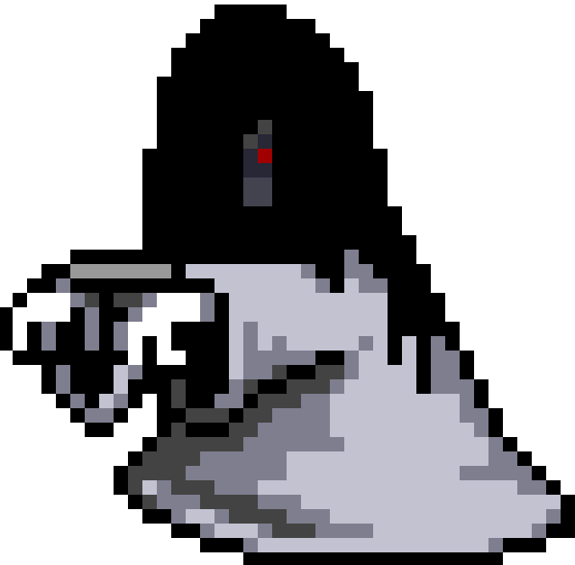
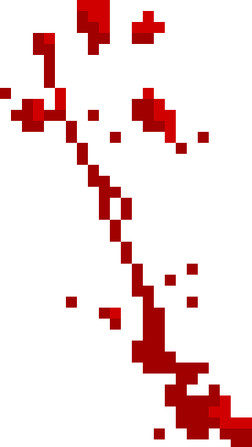
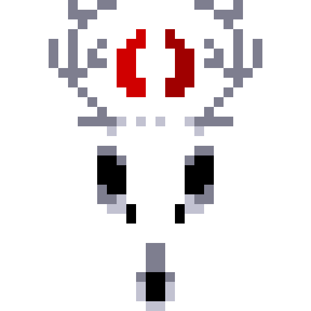

volver
volver

Guia

En la sección "Proporcionar Alma Sometida" introduzca su Correo electronicocon el que ya hizo el pacto.

En la sección "Pacto de sangre" introduzca su Contraseñala sangre la cual uso para el pacto.

En "Reclamar Alma Perdida" te llevará a la sección de Exumación donde podras cambiar o recuperar tu pacto de sangre (Contraseña).

En "Pertenecer a la Plaga" te llevará a la sección de Abrazar la Plaga donde podras contagiarte de la plaga (Registrarse).

Estas en las puertas del Paraiso de la oscuridad.
Permite que escuchemos tus canticos.
Aqui comienza tu travesia.